Topological Data Analysis for Genomics and Evolution: Topology in Biology Adobe Illustrator
Cover design and various scientific figures mostly with Illustrator
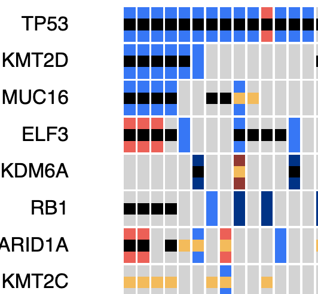
Oncoprint+ d3.js, Python
An interactive oncoprint with gene addition/removal, metadata sorting and draggable columns.
Preprocessing done in python with vcf inputs.
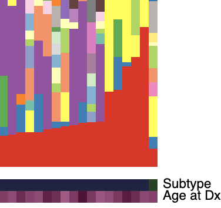
Mutational Signature App d3.js, Python, R
An interactive barplot for exploration of mutational signature data based on COSMICv3.4 reference.
Takes either count or proportion data output from MuSiCal as input
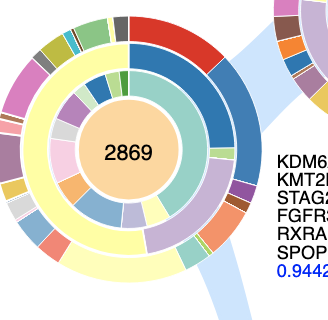
Phylogenetic tree d3.js, Python, Java
Featured in a Nature. A figure representing breakdown of mutational signatures across a phylogenetic tree from a patient with multiple tumors. Tree generated with LICHeE and signatures with deconstructSigs.
DOI: 10.1038/s41586-024-07955-3
Cancer-Drug eXplorer Vue.js, AWS
An application done in partnership with Columbia University Medical Center and Samsung Medical Center for exploration of drug response of patient derived cell lines.
DOI: 10.1038/s41588-018-0209-6
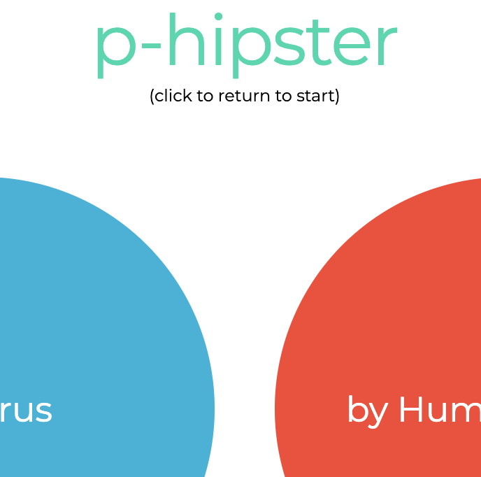
P-HIPSTer Vue.js, AWS
An application for exploring pathogen-to-human protein-protein interactions.
DOI: 10.1016/j.cell.2019.08.005
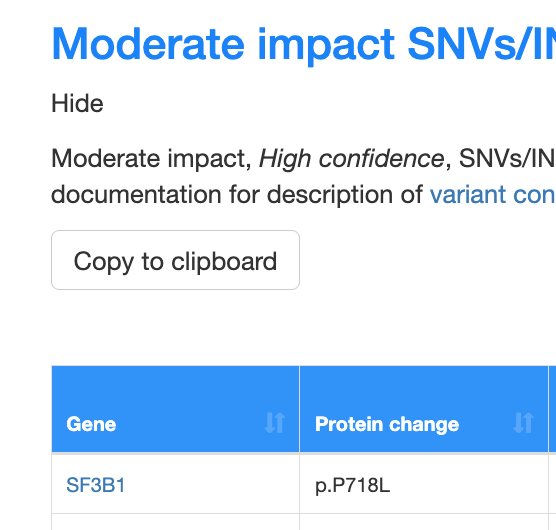
NYGC Somatic Pipeline v6 Sample Report javascript, Python
Autogenerated standalone HTML Report generated by the NYGC Somatic Pipeline v6.
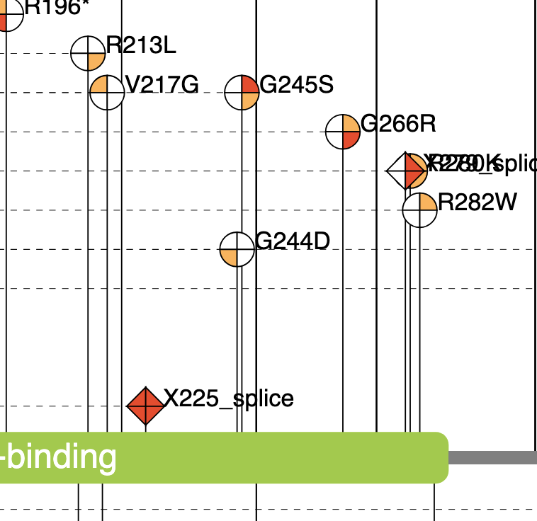
TP53 lollipop d3.js
Lollipop plot designed to represent TP53 mutations in four biopsies per patient collected over time (T1 and T2) and space (upper and lower esophagus).
DOI: 10.1038/s41467-022-29767-7
Topological Data Analysis for Genomics and Evolution: Topology in Biology Adobe Illustrator
Cover design and various scientific figures mostly with Illustrator
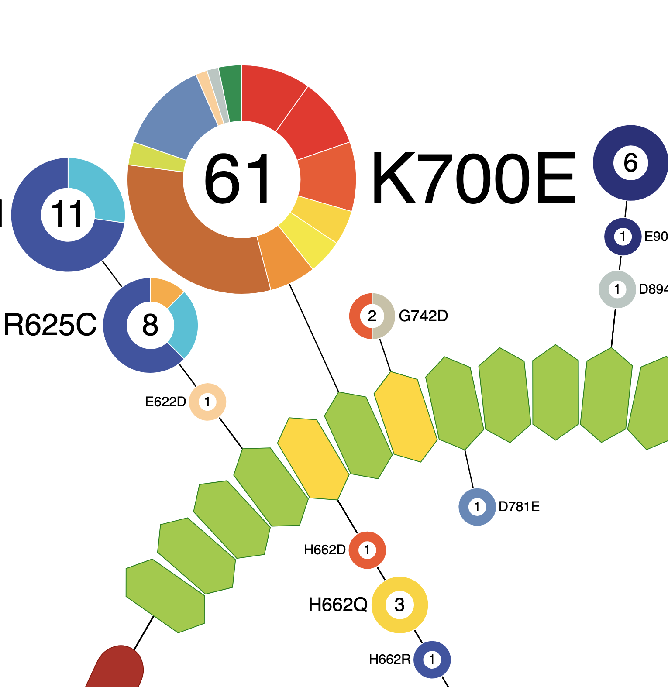
SF3B1 d3.js
Lollipop plot of the location and frequency of SF3B1 hotspot mutations from the pan-cancer dataset on the HEAT repeat domains (green hexagons) of SF3B1.
DOI: 10.1158/2159-8290.CD-19-1330
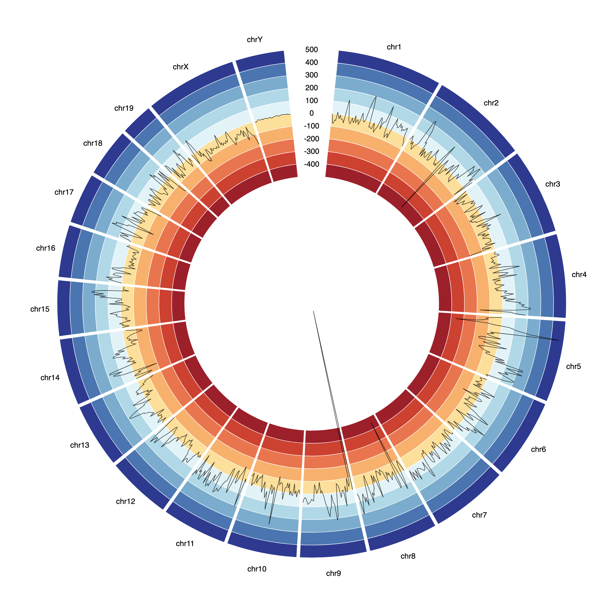
Circos plot d3.js
Circos plot comparing the difference in reads between two samples
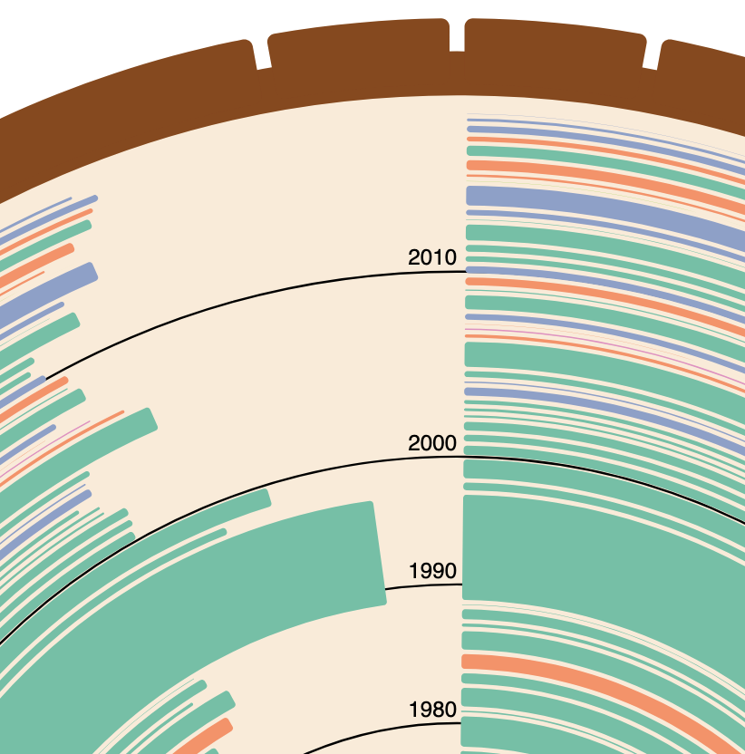
Tree Rings of Oldest Life d3.js
Reddit monthly dataviz competition submission representing the current oldest person in the world as tree rings
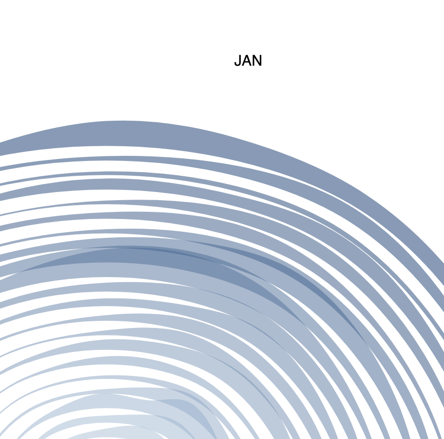
Raindrop plot d3.js
Experimental plot charting rain accumulation over time
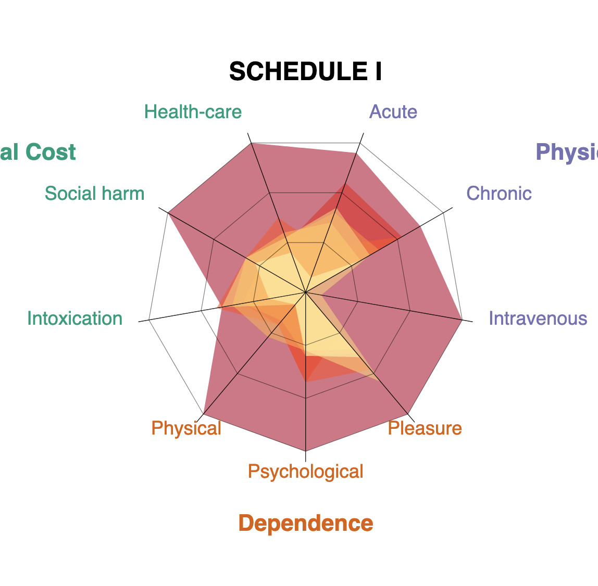
Drug harm radar chart d3.js
Experimental plot showing harm caused by different categories of drugs